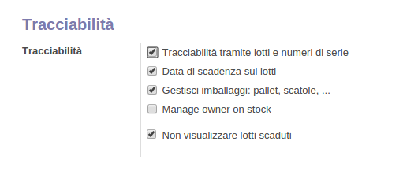

Questo modulo permette di filtrare i lotti che hanno data di fine vita scaduta rispetto alla data odierna.
Quindi quando viene eseguito un ordine di vendita, selezionando un prodotto, verranno visualizzati i lotti
a cui fa riferimento quel prodotto, che avranno la data di fine vita ancora valida.
Andando in: Magazzino-> numeri di serie-> si seleziona un lotto e si imposta: "data di fine vita".
Questo filtro viene eseguito se andando in: Configurazione-> Magazzino, viene selezionata la seguente voce:
